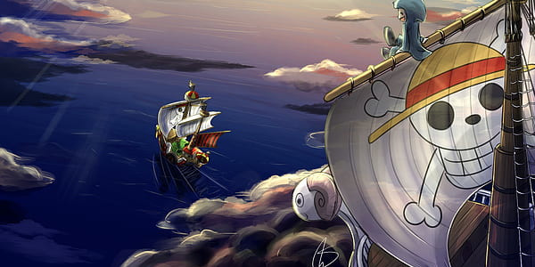
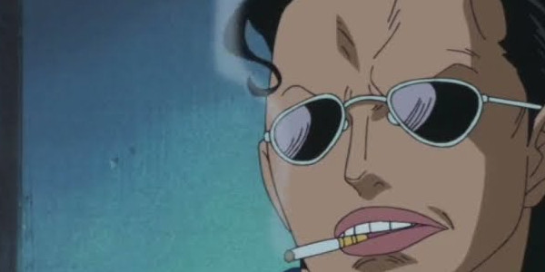
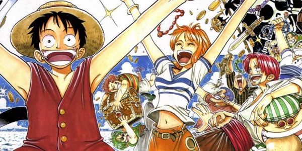
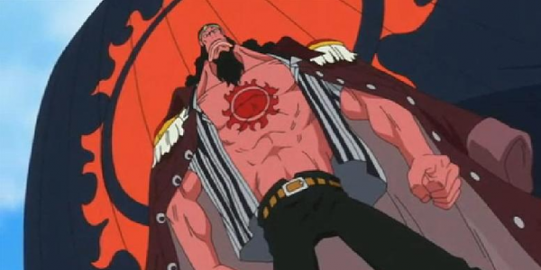

Reasons
Engaging and creative narrative
One Piece has a unique and complex story that has managed to hold viewers' attention over the years. The plot is gripping, intricate, and full of well-written twists. Together, these elements create a fascinating world full of possibilities.

Charisma of the main and secondary characters
One Piece's characters are extremely charismatic and well developed, each with their own distinct traits and individual past and present. The protagonist, Monkey D. Luffy, is one of the most iconic anime characters, and his journey in search of the One Piece treasure is exciting and inspiring, making viewers want to be part of it. In addition, the secondary characters also stand out, often becoming fan favorites thanks to their complexity and charisma.

Action and adventure
One Piece is also known for its thrilling and memorable action scenes. The battles are intense and tend to stand out from one another, becoming one of the key elements of its success. On top of that, the story is packed with adventures and discoveries that truly interest the audience — the story feels alive, and events rarely feel forced or overly scripted; they feel natural.

Universal themes
One Piece tackles very important universal themes, such as racial discrimination, slavery, religious prejudice against certain beliefs, hunger, and torture, and above all, One Piece questions — not so subtly — the disproportionate power of the upper social classes. Most of these themes are addressed discreetly and indirectly, through clever metaphors and analogies. And of course, in this way, our favorite protagonist unknowingly becomes the liberator of peoples who have long suffered injustice.
